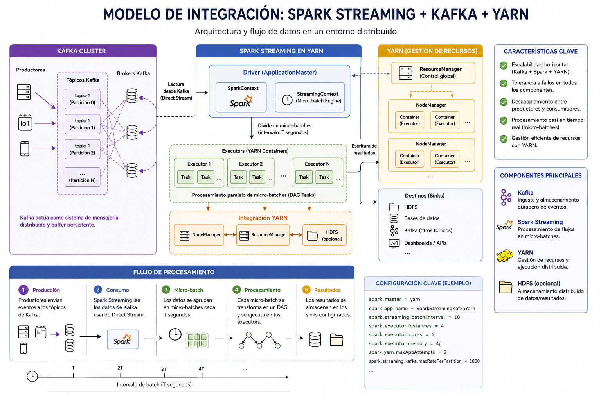

Integración con Kafka
INTRODUCCIÓN
La integración entre Apache Spark y Apache Kafka es uno de los patrones más utilizados en arquitecturas modernas de procesamiento en tiempo real. Kafka actúa como sistema de adquisición y transporte de eventos, mientras que Spark Structured Streaming se encarga de su procesamiento distribuido.
Esta combinación permite construir pipelines escalables, tolerantes a fallos y con baja latencia.
En esta lección se trabaja el patrón completo: lectura desde topics Kafka, conversión de mensajes binarios, aplicación de esquemas, gestión de offsets, escritura hacia sinks y monitorización de consultas de streaming.
CONTENIDO
Arquitectura típica
- Productores envían eventos a un topic Kafka.
- Kafka almacena eventos en particiones distribuidas.
- Spark Structured Streaming consume eventos.
- Los datos se transforman y agregan.
- Resultados se escriben en un sink (Data Lake, base de datos, Kafka, etc.).
Kafka y Spark cumplen responsabilidades distintas. Kafka conserva el log de eventos, permite desacoplar productores y consumidores y mantiene offsets. Spark consume esos eventos para aplicar lógica analítica distribuida: parseo, validación, agregaciones, enriquecimiento y escritura en destinos finales.

Figura 1: Patrón de integración entre Spark Structured Streaming y Kafka
Responsabilidades de cada componente
- Kafka: almacenamiento temporal, particionado, retención y entrega de eventos.
- Spark: procesamiento distribuido, ventanas, estado, enriquecimiento y escritura.
- Checkpoint: progreso de la consulta, offsets procesados y estado de agregaciones.
- Sink: materialización del resultado en Parquet, Delta, Kafka, JDBC u otro destino.
- YARM: Gestión de los recursos del modelo
Dependencias necesarias
Para utilizar Kafka con Spark se requiere incluir el paquete:
--packages org.apache.spark:spark-sql-kafka-0-10_2.12:3.x.xLa versión debe coincidir con la versión instalada de Spark.
En PySpark local, el paquete puede añadirse al iniciar la sesión o al ejecutar
spark-submit. En entornos gestionados, la dependencia suele configurarse en el
clúster o en la definición del job.
Lectura desde Kafka (Structured Streaming)
stream_df = (spark
.readStream
.format("kafka")
.option("kafka.bootstrap.servers", "localhost:9092")
.option("subscribe", "mi_topic")
.option("startingOffsets", "latest")
.load())- key (binario)
- value (binario)
- topic
- partition
- offset
- timestamp
Las columnas key y value llegan como binario. La clave suele usarse
para particionado lógico y orden por entidad; el valor contiene el payload del evento.
Es necesario convertir el campo value desde binario a string:
from pyspark.sql.functions import col
parsed_df = stream_df.selectExpr("CAST(value AS STRING)")Parseo con esquema explícito
En producción no conviene tratar el JSON como texto indefinidamente. Definir un esquema permite validar tipos, seleccionar columnas y evitar inferencias costosas.
from pyspark.sql.functions import col, from_json
from pyspark.sql.types import StructType, StructField, StringType, DoubleType, TimestampType
schema = StructType([
StructField("event_time", TimestampType(), True),
StructField("event_id", StringType(), True),
StructField("customer_id", StringType(), True),
StructField("amount", DoubleType(), True),
StructField("country", StringType(), True)
])
events_df = (stream_df
.selectExpr("CAST(key AS STRING) AS key", "CAST(value AS STRING) AS json_value",
"topic", "partition", "offset", "timestamp AS kafka_timestamp")
.select(from_json(col("json_value"), schema).alias("event"),
"key", "topic", "partition", "offset", "kafka_timestamp")
.select("event.*", "key", "topic", "partition", "offset", "kafka_timestamp"))
Conservar topic, partition y offset durante el
desarrollo ayuda a depurar problemas de duplicados, reprocesamiento o eventos inesperados.
Escritura hacia Kafka
query = (df
.selectExpr("CAST(key AS STRING)", "CAST(value AS STRING)")
.writeStream
.format("kafka")
.option("kafka.bootstrap.servers", "localhost:9092")
.option("topic", "output_topic")
.option("checkpointLocation", "/checkpoint")
.start())
Para escribir en Kafka, el DataFrame debe tener una columna value y puede incluir
key. Si se escribe un resultado estructurado, se suele convertir a JSON con
to_json(struct(...)).
from pyspark.sql.functions import to_json, struct
out_df = events_df.select(
col("customer_id").cast("string").alias("key"),
to_json(struct("event_id", "event_time", "customer_id", "amount", "country")).alias("value")
)Gestión de offsets
startingOffsets- earliest: desde el inicio del topic.
- latest: desde el último offset disponible.
Spark guarda offsets procesados en el directorio de checkpoint, permitiendo reanudar procesamiento tras fallos.
Si existe checkpoint, Spark prioriza la posición guardada y no vuelve a aplicar
startingOffsets. Por eso borrar un checkpoint puede cambiar el punto de arranque
y provocar reprocesamiento o pérdida de eventos según la configuración.
Esta opción controla cómo reacciona Spark si intenta leer offsets que Kafka ya no conserva por retención. En entornos críticos conviene revisar este comportamiento y dimensionar la retención del topic para permitir recuperación.
.option("failOnDataLoss", "true")Garantías de procesamiento
- At-least-once por defecto.
- Exactly-once posible combinando Kafka idempotente y sinks compatibles.
La garantía final depende de toda la cadena. Aunque Spark gestione offsets y checkpoints, un sink no idempotente puede generar duplicados si un micro-batch se reintenta tras un fallo.
Procesamiento típico
from pyspark.sql.functions import from_json, col
from pyspark.sql.types import StructType, StringType, IntegerType
schema = StructType() \
.add("user", StringType()) \
.add("amount", IntegerType())
parsed = (stream_df
.selectExpr("CAST(value AS STRING)")
.select(from_json(col("value"), schema).alias("data"))
.select("data.*"))Ventanas y tiempo de evento
Cuando el evento incluye un timestamp de negocio, las agregaciones deberían basarse en tiempo de evento, no solo en el timestamp de Kafka o en el tiempo de procesamiento.
from pyspark.sql.functions import window, sum as spark_sum
ventas_5m = (events_df
.withWatermark("event_time", "10 minutes")
.groupBy(window(col("event_time"), "5 minutes"), col("country"))
.agg(spark_sum("amount").alias("total_amount")))El watermark limita cuánto tiempo espera Spark eventos tardíos y permite limpiar estado de ventanas antiguas.
Rendimiento y particionado
- El número de particiones Kafka influye en el paralelismo.
- Cada partición Kafka puede mapearse a una partición Spark.
- Evitar skew en claves.
Un topic con pocas particiones limitará el paralelismo máximo de lectura. Por el contrario, demasiadas particiones pueden aumentar metadatos, ficheros de salida y coste de coordinación.
Control de cargaEn algunos entornos se limita la cantidad de datos leídos por trigger para evitar saturar el clúster o el sink de salida.
.option("maxOffsetsPerTrigger", "50000")Escritura en Parquet o Delta
Además de escribir a Kafka, Spark puede materializar resultados en un Data Lake. Parquet es una
opción eficiente para analítica; Delta Lake añade transacciones, evolución de esquema y operaciones
como MERGE.
query = (events_df.writeStream
.format("parquet")
.option("path", "/data/bronze/events")
.option("checkpointLocation", "/data/checkpoints/events")
.outputMode("append")
.start())Seguridad
Autenticación SASL.option("kafka.security.protocol", "SASL_SSL")
.option("kafka.sasl.mechanism", "SCRAM-SHA-256").option("kafka.ssl.truststore.location", "/path/truststore")Las credenciales, certificados y rutas de truststore no deberían quedar embebidas en notebooks compartidos. En producción se gestionan mediante variables de entorno, secretos del clúster o mecanismos de la plataforma cloud.
Monitorización
- Lag del consumidor.
- Throughput (mensajes/segundo).
- Latencia end-to-end.
- Errores de conexión.
Spark expone información de progreso mediante objetos StreamingQueryProgress,
que permiten observar registros de entrada, duración de batches y estado de operadores.
query.lastProgress
query.status
spark.streams.activeProblemas comunes
- Offsets incorrectos tras reinicio.
- Checkpoint corrupto.
- Desajuste de versiones Kafka-Spark.
- Particiones insuficientes.
- JSON mal formado o cambios de esquema no controlados.
- Sinks lentos que provocan acumulación de lag.
- Borrado accidental de checkpoints.
Buenas prácticas
- Configurar correctamente checkpointLocation.
- Definir claves adecuadas para particionado.
- Evitar transformaciones costosas antes de parseo.
- Monitorizar lag constantemente.
- Definir esquemas explícitos para los eventos.
- Separar checkpoints por consulta.
- Usar sinks idempotentes o deduplicación cuando haya reintentos.
- Probar recuperación ante fallos y reprocesamiento desde offsets antiguos.
CONCLUSIÓN
La integración entre Apache Spark y Apache Kafka permite construir arquitecturas de procesamiento en tiempo real robustas y escalables.
Kafka actúa como sistema de adquisición y transporte de eventos, mientras que Spark proporciona capacidad analítica distribuida, ofreciendo una solución completa para pipelines orientados a eventos.
EJERCICIO RESUELTO PASO A PASO
Leer eventos desde Kafka con Spark Structured Streaming
En este ejercicio se construye un pequeño pipeline de integración entre Apache Kafka y Spark Structured Streaming. Kafka actuará como sistema de entrada de eventos y Spark se encargará de leerlos, convertirlos desde JSON y mostrar el resultado procesado.
Objetivos del ejercicio
- Crear un topic Kafka para eventos de ventas.
- Publicar eventos JSON en Kafka.
- Leer el topic desde Spark Structured Streaming.
- Convertir las columnas
keyyvaluedesde binario a texto. - Aplicar un esquema al JSON recibido.
- Mostrar los eventos procesados por consola.
Paso 1. Crear el topic Kafka
kafka-topics.sh \
--bootstrap-server localhost:9092 \
--create \
--if-not-exists \
--topic ventas \
--partitions 3 \
--replication-factor 1Paso 2. Publicar eventos de prueba
kafka-console-producer.sh \
--bootstrap-server localhost:9092 \
--topic ventas \
--property parse.key=true \
--property key.separator=:Introduce los siguientes eventos en la terminal del productor:
cliente_1:{"event_id":"evt-001","event_time":"2026-07-03T10:00:00Z","customer_id":"cliente_1","amount":25.5,"country":"ES"}
cliente_2:{"event_id":"evt-002","event_time":"2026-07-03T10:01:00Z","customer_id":"cliente_2","amount":40.0,"country":"PT"}
cliente_1:{"event_id":"evt-003","event_time":"2026-07-03T10:02:00Z","customer_id":"cliente_1","amount":18.9,"country":"ES"}Paso 3. Ejecutar el programa PySpark
Para que Spark pueda conectarse a Kafka, ejecuta el programa incluyendo el paquete
spark-sql-kafka. La versión debe ajustarse a la versión de Spark instalada.
spark-submit \
--packages org.apache.spark:spark-sql-kafka-0-10_2.12:3.5.1 \
kafka_spark_ventas.pyCódigo resuelto: kafka_spark_ventas.py
from pyspark.sql import SparkSession
from pyspark.sql import functions as F
from pyspark.sql.types import StructType, StructField, StringType, DoubleType, TimestampType
spark = (SparkSession.builder
.appName("KafkaSparkVentas")
.master("local[*]")
.getOrCreate())
schema = StructType([
StructField("event_id", StringType()),
StructField("event_time", TimestampType()),
StructField("customer_id", StringType()),
StructField("amount", DoubleType()),
StructField("country", StringType())
])
kafka_df = (spark.readStream
.format("kafka")
.option("kafka.bootstrap.servers", "localhost:9092")
.option("subscribe", "ventas")
.option("startingOffsets", "earliest")
.load())
eventos = (
kafka_df
.selectExpr(
"CAST(key AS STRING) AS key",
"CAST(value AS STRING) AS json_value",
"topic",
"partition",
"offset",
"timestamp AS kafka_timestamp"
)
.select(
"key",
F.from_json(F.col("json_value"), schema).alias("event"),
"topic",
"partition",
"offset",
"kafka_timestamp"
)
.select(
"key",
"event.event_id",
"event.event_time",
"event.customer_id",
"event.amount",
"event.country",
"topic",
"partition",
"offset",
"kafka_timestamp"
)
)
ventas_por_pais = (
eventos
.groupBy("country")
.agg(
F.count("*").alias("num_eventos"),
F.sum("amount").alias("importe_total")
)
)
query = (
ventas_por_pais.writeStream
.outputMode("complete")
.format("console")
.option("truncate", "false")
.option("checkpointLocation", "checkpoints/kafka_spark_ventas")
.start()
)
query.awaitTermination()Resultado esperado
Spark mostrará una tabla agregada con el número de eventos y el importe total por país.
+-------+-----------+-------------+
|country|num_eventos|importe_total|
+-------+-----------+-------------+
|ES |2 |44.4 |
|PT |1 |40.0 |
+-------+-----------+-------------+Explicación paso a paso
Kafka almacena los eventos en el topic ventas. Cada mensaje tiene una
key, que identifica al cliente, y un value, que contiene el evento
en formato JSON.
Spark lee el topic mediante readStream. Las columnas key y
value llegan en formato binario, por lo que se convierten a texto mediante
CAST.
Después se aplica un esquema explícito con from_json. Esto permite transformar
el JSON en columnas estructuradas y trabajar con tipos de datos adecuados, como
TimestampType y DoubleType.
Se conservan columnas propias de Kafka como topic, partition,
offset y kafka_timestamp. Estos metadatos son útiles para depurar
el consumo y entender desde qué posición del topic se han leído los eventos.
Finalmente, Spark agrupa los eventos por país y calcula el número de ventas y el importe total. La salida se muestra en consola y se utiliza un checkpoint para guardar el progreso de la consulta.
Relación con la lección
Este ejercicio reproduce el patrón habitual de integración entre Kafka y Spark: Kafka recibe y conserva eventos, mientras Spark los consume, los parsea, los transforma y escribe el resultado en un sink.
En un sistema real, el sink de consola se sustituiría por un Data Lake, una tabla analítica, otro topic Kafka o una base de datos.
Preguntas de reflexión
- ¿Por qué las columnas
keyyvaluellegan en formato binario? - ¿Qué diferencia hay entre
event_timeykafka_timestamp? - ¿Para qué sirven las columnas
partitionyoffset? - ¿Qué función cumple
checkpointLocation? - ¿Qué cambiaría si se quisiera escribir el resultado en Parquet en lugar de consola?